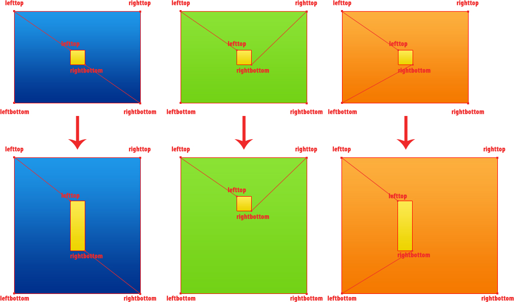
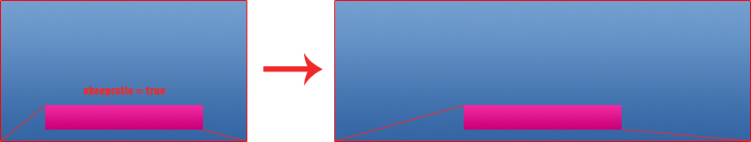

This documentation aims at helping you understand how VLC decides how to resize a skin and enabling you to create properly resizable skins.
How each element in the skin is resized and repositioned is determine by four attributes.
When a window has been resized the position and size of each of the elements in the currently displayed layout is determined by how the edges of the elements are connected to the edges of their parent panel, group or layout.
These connections are set by the lefttop and rightbottom attributes of the elements. They define to which edge of the parent item the upper left edge and lower right edge move. The following image illustrates some example connections and how the element is then resized and repositioned when the window is resized.

Examples:
So an element which should always stay in the upper left corner of the window must have both the lefttop and rightbottom attribute set to lefttop.
For it to stay always in the upper right corner they accordingly would have to be set to righttop.
If an element should keep its vertical position in the skin, but should change its width according to the width of the window, lefttop has to be set to lefttop and rightbottom to righttop.
The keep x ratio and keep y ratio (called xkeepratio and ykeepratio in the XML) tell VLC whether the width or height of an element should be adjusted when resizing or whether just its position should be changed.
Example:
If you'd want an element to keep its relative horizontal position
you'd have to set lefttop and rightbottom so that the element would be resized according to the change of width.
Additionately you have to set the keep X ratio attribute to true. Then the width of the element will not be changed and it will keep its relative horizontal position in the window.
